MBLogic
for an open world in automation
MBLogic
for an open world in automation
Help - Configure HMI
Overview
The "Configure HMI" page provides an overview the current configuration of the HMI subsystem. This is divided into the following sections:
- HMI ID
- Tag configuration
- Alarm and event tables
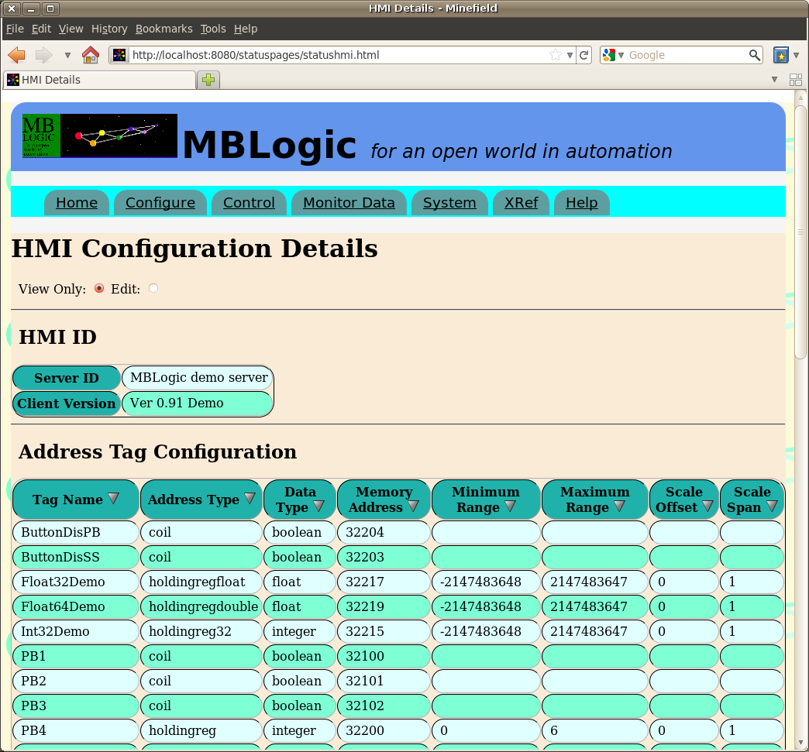
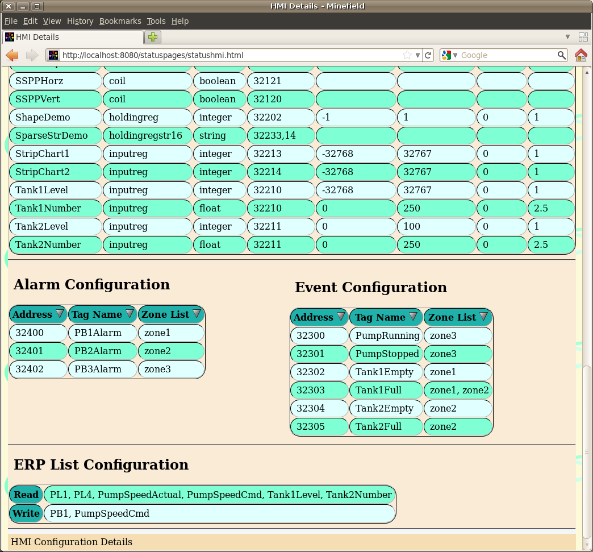
HMI Parameters
HMI ID
This displays the HMI reserved tag information from the HMI configuration. This includes the following:
| Item | Configuration Label | Description |
|---|---|---|
| Server ID | [serverid] | This is the HMI server id tag defined by the user. |
| Client Version | [clientversion] | This is the HMI client version tag defined by the user. |
Address Tag Configuration
This shows all the normal address tags defined by the user, together with the address, limit, and scaling information. The number of rows will vary according to the number of tags configured.
| Item | Configuration Label | Description |
|---|---|---|
| Tag Name | N/A | The tag name assigned by the user. |
| Address Type | addrtype | The address type for the local data table. |
| Data Type | datatype | The protocol data type. |
| Memory Address | memaddr | The address in the local data table associated with the tag. 2 |
| Minimum Range | range | The minimum value permitted.1 |
| Maximum Range | range | The minimum value permitted.1 |
| Scale Offset | scale | The scaling value offset.1 |
| Scale Span | scale | The scaling value span.1 |
1For boolean tags, the range and scale values are not used. The values shown are the defaults, but do not represent actual legal values.
2For string data, the maximum string length is also included and is displayed in brackets. E.g. 2345 (15)
Event and Alarm Configuration
Event and Alarm configurations are identical, so both are described here together. These display the event and alarm configurations selected by the user in the HMI configuration. These includes the following:
| Item | Description |
|---|---|
| Address | This is the address in the local data table defined by the user. |
| Tag Name | This is the event or alarm tag name defined by the user. |
| Zone List | This is the list of event or alarm zones defined by the user for that event or alarm. |
ERP List
The ERP List allows you to select which HMI tags are visible to the ERP server. You may edit the ERP read and write lists by selecting tags from the drop down lists. Selecting a tag from the "add tag" list will add that tag to the corresponding ERP list. Selecting a tag from the "remove tag" list will remove that tag from the ERP list.
Display Order
Each table of data displayed can be sorted by clicking on a table heading. The table will be sorted according to the selected column.

Editing Parameters
System Parameters
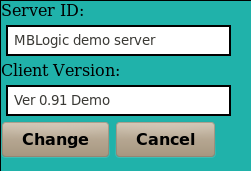
HMI Address Tag Parameters
The number and type of parameters will depend on the the address type.
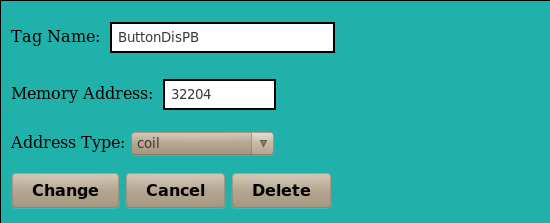
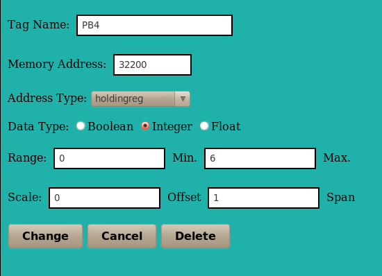
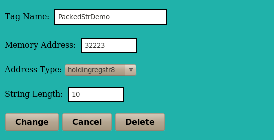
Alarms and Events
Zone names must be separated by commas.
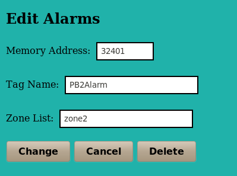
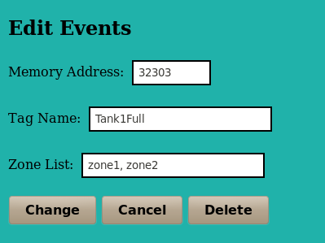
ERP Filters
Select "read" to edit the read list, and "write" to edit the write list. Next, add or remove HMI tags as desired and then select "change" to accept the changes, or "cancel" to cancel editing.
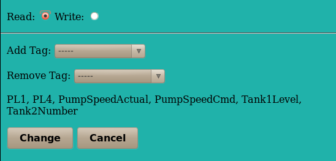
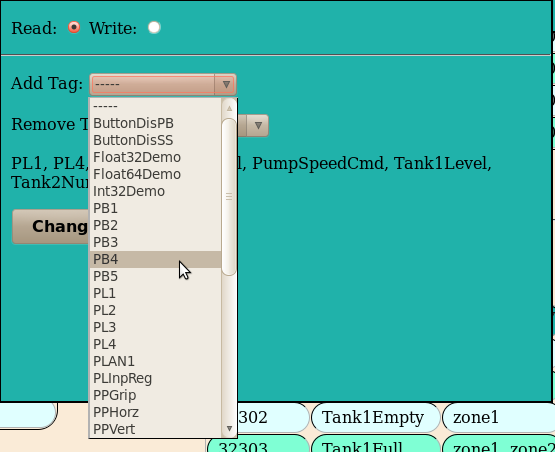
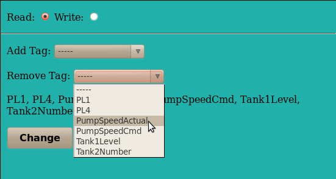